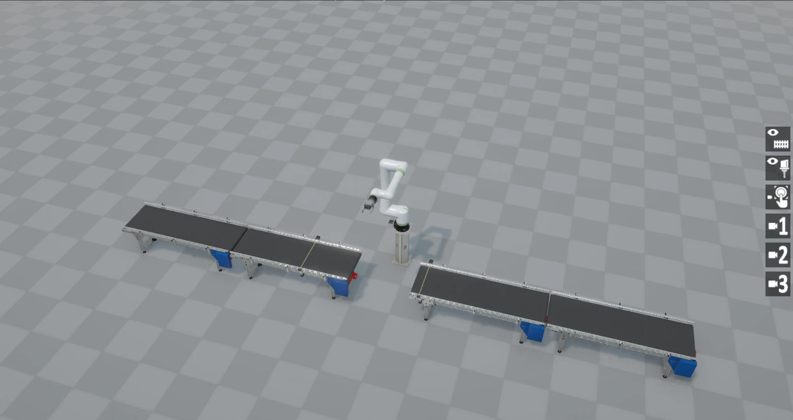
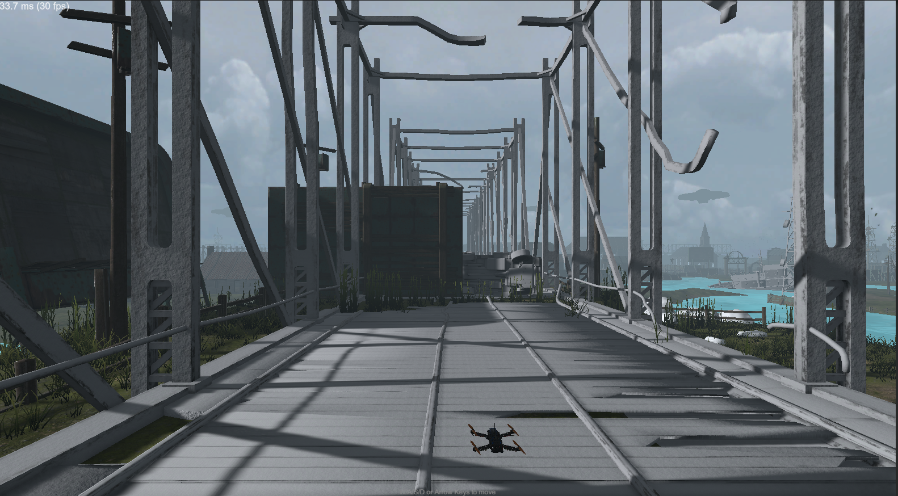

HIL con Modelos 3D en Unity
La etapa final del curso: el hardware de control real interactuando con plantas virtuales inmersivas.

Gemelo digital del brazo robótico en Unity, controlado en tiempo real por el hardware embebido.

Simulación 3D del dron/quadcopter respondiendo a los comandos del controlador real.

Modelo 3D del vehículo probando el controlador de velocidad en un entorno HIL.